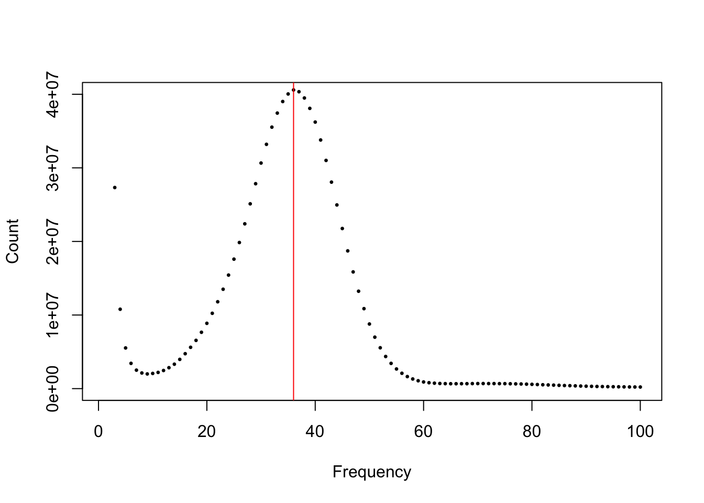
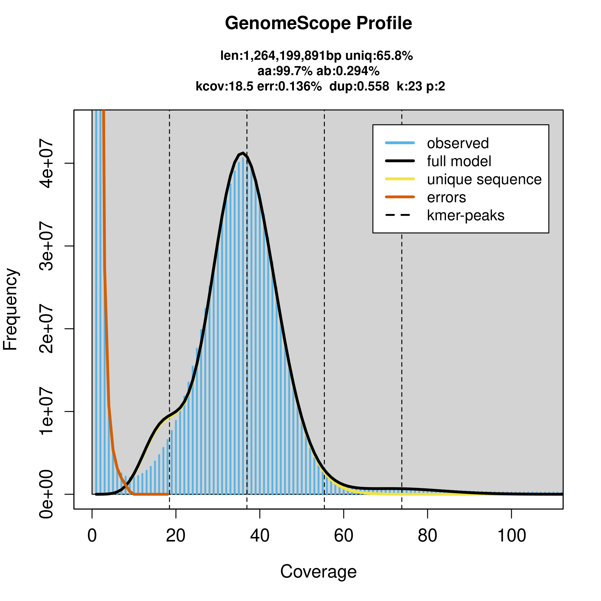
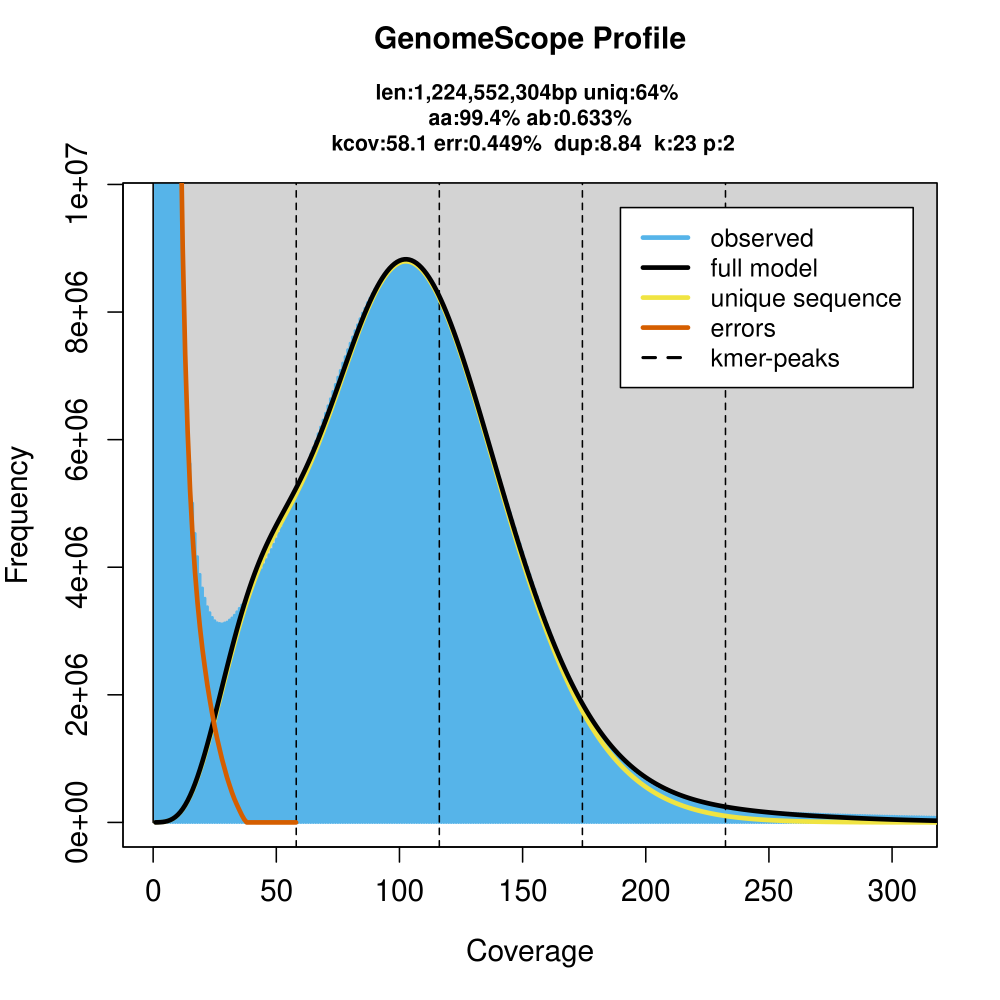

7 Genome Assembly - first steps
7.1 Learning Objectives
| Learning Objectives: |
| Conduct quality control analysis of raw data specific to genome assembly. |
| Estimate genome size from unassembled reads. |
In this chapter we’re going to focus on initial characterization of the data we’ll use to assemble a genome.
7.2 Introduction
The field of genome assembly is rapidly changing. The first draft human genome, completed in 2003 (but far from a complete or correct genome!) took 13 years to sequence and assemble and cost $2.7 billion.
Software and data used in genome assembly have advanced rapidly ever since. So all this is to say, we’ll demonstrate the general workflow and concepts here, but you can expect improvements in data, software and reductions in cost to make any specific recommendations obsolete pretty quickly!
7.3 Code
We’re going to work through scripts that can be found in this GitHub repository. As usual, they are all written for the Xanadu cluster at UConn, and so you should be able to clone the repository and run the scripts without any modification.
Warning
Be aware this project is going to balloon up to around 700GB (though the final products are just a couple GB), so you may want to create a directory in /scratch to work in rather than your home.
7.4 Data
In these chapters, we’ll use publicly available data from the Vertebrate Genomes Project. Specifically, the data we’ll grab for this chapter is for banded killifish, Fundulus diaphanus an inhabitant mostly of freshwaters in northeast North America.
Links to the raw data can be found at GenomeArk and VGP’s final assembly has been deposited in NCBI. Note there are two genome assembly products there. That’s because VGP did a phased diploid assembly, which we’ll explain more about later.
If you visit the GenomeArk page you’ll see three data types:
- PacBio HiFi data: There are a few products here. We’re going to grab the fastq files, which are the actual raw HiFi reads we want to use for assembly. HiFi data is one of the most widely used data types in primary assembly at the moment.
- Hi-C data: This is chromatin conformation capture data that is generally used to understand the physical organization of the genome. We’re going to use it to scaffold our contigs after primary assembly. This is paired-end Illumina data generated with a highly specialized library preparation procedure.
- Bionano data: We glossed over Bionano in ISG5302, but it’s a specialized type of data used for scaffolding. We’re going to skip this as it is less commonly used currently.
Note that by simply downloading pre-existing data, we are skipping over an important stage in planning a genome. We typically recommend that you try to get an estimate of the genome size so that you can aim for certain target coverages. You can sometimes find this in the literature from flow cytometry studies, but we’ll cover below how you can get this number from sequencing data. It’s often cheap to collect some Illumina data that can be used for this purpose to guide long read sequencing and scaffolding data collection.
7.4.1 Downloading the data
If you haven’t already, clone the repository:
git clone https://github.com/isg-certificate/genome_assembly.gitThese are pretty simple scripts. In scripts/01_dataDownload/01_hifi.sh we just do the following to grab the two HiFi fastq files:
wget -P ${OUTDIR} https://genomeark.s3.amazonaws.com/species/Fundulus_diaphanus/fFunDia1/genomic_data/pacbio_hifi/m64330e_221020_171856.bc1022--bc1022.hifi_reads.fastq.gz
wget -P ${OUTDIR} https://genomeark.s3.amazonaws.com/species/Fundulus_diaphanus/fFunDia1/genomic_data/pacbio_hifi/m64334e_221030_084704.bc1022--bc1022.hifi_reads.fastq.gzIn scripts/01_dataDownload/02_hiC.sh we’re going to download the Illumina fastq files and a couple metadata files.
wget -P ${OUTDIR} https://genomeark.s3.amazonaws.com/species/Fundulus_diaphanus/fFunDia1/genomic_data/arima/fFunDia1_Banded_Killifish_R1_001.fastq.gz
wget -P ${OUTDIR} https://genomeark.s3.amazonaws.com/species/Fundulus_diaphanus/fFunDia1/genomic_data/arima/fFunDia1_Banded_Killifish_R2_001.fastq.gz
wget -P ${OUTDIR} https://genomeark.s3.amazonaws.com/species/Fundulus_diaphanus/fFunDia1/genomic_data/arima/re_bases.txt
wget -P ${OUTDIR} https://genomeark.s3.amazonaws.com/species/Fundulus_diaphanus/fFunDia1/genomic_data/arima/fFunDia1_hic_stats.yamlThe yaml file contains some useful metadata:
hic:
data:
- mean length: 150.0
name: fFunDia1_Banded_Killifish_R1_001.fastq.gz
reads: 616286356
yield: 92442953400
- mean length: 150.0
name: fFunDia1_Banded_Killifish_R2_001.fastq.gz
reads: 616286356
yield: 92442953400
metadata:
- enzymes: GATC,GANTC,CTNAG,TTAA
name: fFunDia1_Banded_Killifish_R1_001.fastq.gz
version: arima 2.0
- enzymes: GATC,GANTC,CTNAG,TTAA
name: fFunDia1_Banded_Killifish_R2_001.fastq.gz
version: arima 2.0
total:
coverage: 122.03690217821782
reads: 1232572712
yield: 184885906800We have about 616 million 150bp paired end reads giving an expected 122x coverage of the genome. The “enzymes” are restriction enzymes used in the library preparation.
7.4.2 Basic QC
We’re going to do some basic QC on these data to get a basic sense of the data quality we’re dealing with.
7.4.2.1 HiFi data
For the HiFi data, we’ll run NanoPlot. It produces an HTML formatted report. See script scripts/02_rawQC/01_nanoplotHIFI.sh
It’s pretty simple:
NanoPlot --fastq ${INDIR}/*hifi*fastq.gz -o ${OUTDIR} -p hifi -t 4 We’re using globs (*) to get nanoplot to produce one report for both HiFi fastq files. To see some text results:
cat results/02_qc/nanoplot/hifiNanoStats.txt General summary:
Mean read length: 14,662.8
Mean read quality: 28.3
Median read length: 13,825.0
Median read quality: 35.6
Number of reads: 3,290,962.0
Read length N50: 14,886.0
STDEV read length: 4,058.0
Total bases: 48,254,719,500.0
Number, percentage and megabases of reads above quality cutoffs
>Q5: 3290962 (100.0%) 48254.7Mb
>Q7: 3290962 (100.0%) 48254.7Mb
>Q10: 3290962 (100.0%) 48254.7Mb
>Q12: 3290962 (100.0%) 48254.7Mb
>Q15: 3290962 (100.0%) 48254.7Mb
Top 5 highest mean basecall quality scores and their read lengths
1: 93.0 (7981)
2: 93.0 (8742)
3: 93.0 (1273)
4: 93.0 (7051)
5: 93.0 (6247)
Top 5 longest reads and their mean basecall quality score
1: 49746 (22.3)
2: 49407 (24.3)
3: 49367 (21.6)
4: 48162 (27.2)
5: 47986 (25.8)As expected for HiFi data, we have a mean read length of around 14kb. Median read quality is phred 35.6 for an error rate of 0.00028. This low error rate is really important as it allows assembly through “repetitive” sequences as long as the repeats have more differences than the expected error rate. Similarly, it allows the accurate separation of haplotypes in diploid organisms as long as heterozygosity is higher than the error rate (it very often is higher than this error rate).
Our expected genome size is around 1.3gb, so this amounts to about 37x coverage.
Don’t forget to download and open the HTML file in a browser: hifiNanoPlot-report.html The visualizations can help you understand more of the detail of your data (such as the fact that reads < Q20 were filtered out).
7.4.2.2 Illumina Hi-C data
We’re going to run good old fastqc on the Hi-C data. See scripts/02_rawQC/02_fastqcHiC.sh.
fastqc -t 4 -o ${OUTDIR} ${INDIR}/fFunDia1*.gzThis will produce 2 HTML reports. We’ll skip multiQC here because, well, two html files isn’t that much to just look at.
We can see these data are all 150bp, so they haven’t been trimmed before deposit in the public repository. We don’t see any major quality issues, and miraculously, zero adapter contamination. Because of this, we’ll skip quality trimming.
7.5 Genome size estimation
An area of genomics that is just plain cool and full of simple, clever ideas, is the analysis of k-mer data. The term k-mer refers simply to sequences of length k. The starting point for all k-mer-based analysis is to simply take a collection of sequences and chop them up into all possible subsequences of length k and count up their frequencies.
So for a sequence GTCAGTAGAT, all 5-mers are as follows:
seq GTCAGTAGAT
5mer GTCAG
TCAGT
CAGTA
AGTAG
TAGATBecause DNA is double-stranded and typically sequenced without respect to strand, we usually count canonical k-mers, meaning that a k-mer and its reverse complement are treated as the same (e.g. GTCAG = CTGAC).
We can chop up and count raw sequencing (as we will do here), or we can do it for completed genomes. In the third chapter in this module we will estimate the completeness and accuracy of our genome assembly by comparing the k-mers in the raw sequence data to the complete genome.
Once you have your k-mer count databases, there are a variety of analyses you can do to model the distribution and make inferences about the underlying data. In this section, we will estimate genome size and heterozygosity.
The idea behind estimating genome size from k-mers will be covered in ISG5302, so we won’t explain much more here, but we have a couple basic issues to deal with.
- What value should you choose for
k? It’s hard to give great guidelines. It depends on genome size and heterozygosity. Usually something in the range of 19-23 works for estimating genome size. We’ll go with 23 for this. - What type of data do you need? These types of k-mer analyses are only effective with highly accurate data, such as HiFi or Illumina data (or ONT duplex data). If the error rate is too high, too many k-mers will have errors in them and the models will perform poorly. You also need the data to be WGS shotgun data. That is, it should be randomly distributed throughout the genome. We have HiFi data, which will work. We also have Illumina Hi-C data. Hi-C might not really have the randomness we want, but we’ll try it anyway and see what happens. - What depth of coverage do we need? We usually recommend people shoot for 80-150x coverage (of Illumina data). We have 37x coverage of HiFi data, which is a bit low, but we’ll try it anyway. The Hi-C data is 122x coverage. That would be great, but the Hi-C data may have some properties that detrimentally effect the estimates. We’ll see!
7.5.1 Getting the k-mer frequency spectrum.
For this application, what we want is the k-mer frequency spectrum. You can think of this as a histogram giving how many k-mers have a given frequency. So on the x-axis you have k-mer frequency and on the y-axis a count of k-mers.
In this plot, the peak is 36. If you’ve done the ISG5302 section on this, you won’t be surprised to see that it is just about our expected sequencing coverage for the dataset. This is the data that will be modeled to estimate genome size and heterozygosity.
To get this, there are two steps:
- Shred the sequencing data into k-mers and count up the frequency of each k-mer.
- Count up the frequencies of k-mer frequencies to get the k-mer frequency spectrum.
7.5.1.1 Counting k-mers.
We’re going to use meryl for this. There are a lot of k-mer counters out there (including KMC, KAT and Jellyfish).
K-mer counting of large sequencing datasets is typically a pretty memory-intensive process. This is because there are a ton of k-mers to keep track of! The larger k is, this worse this becomes. If k=1, you only have 4 (A, C, G, T). If k=read length (e.g. 150bp for our Hi-C data) then you are essentially counting the frequency of each unique read!
We have two scripts for k-mer counting, one for each of our datasets: - scripts/03_genomeSize/01_merylCountHIFI.sh - scripts/03_genomeSize/02_merylCountHiC.sh
The program calls are similar:
meryl count k=23 memory=250 threads=16 ${INDIR}/*hifi*fastq.gz output ${OUTDIR}/dbHere we are requesting 250G of memory and 16 cpus (also reflected in the SLURM header).
The output will be a directory, ${OUTDIR}/db, containing the meryl k-mer database.
For the HiFi data, at 37x coverage, seff output looks like this:
Job ID: 8884236
Cluster: xanadu
User/Group: nreid/cbc
State: COMPLETED (exit code 0)
Nodes: 1
Cores per node: 16
CPU Utilized: 09:02:48
CPU Efficiency: 87.10% of 10:23:12 core-walltime
Job Wall-clock time: 00:38:57
Memory Utilized: 152.96 GB
Memory Efficiency: 61.19% of 250.00 GBSo we requested excess memory, but that’s ok. It took around 40 minutes of wall time.
For the Hi-C data, with 122x coverage:
Job ID: 8884245
Cluster: xanadu
User/Group: nreid/cbc
State: COMPLETED (exit code 0)
Nodes: 1
Cores per node: 16
CPU Utilized: 1-03:05:48
CPU Efficiency: 87.58% of 1-06:56:16 core-walltime
Job Wall-clock time: 01:56:01
Memory Utilized: 226.71 GB
Memory Efficiency: 64.78% of 350.00 GBIt used 226G of memory and 2 hours of wall time.
7.5.1.2 The k-mer frequency spectrum
Now that we’ve digested the data into k-mer databases, actually calculating the frequency spectrum is super fast and easy and requires very little resources.
The scripts are:
scripts/03_genomeSize/03_merylHistogramHIFI.shscripts/03_genomeSize/04_merylHistogramHiC.sh
The command line looks like:
meryl histogram ${INDIR} | sed 's/\t/ /' >${OUTDIR}/hifi.histoAnd the hifi.histo file is very simple:
1 1074054143
2 105077828
3 27325822
4 10787262
5 5526611
6 3432311
7 2509450
8 2124587
9 1995496
10 2061575
...Column 1 is a frequency and column 2 is the number of k-mers that have that frequency. The sed command changes the tab separated table to a space because that’s what the next program we’re going to use wants.
Note that by far the most common k-mer frequencies are 1 and 2. Those are k-mers with sequencing errors in them! Because sequencing errors are rare and random, they most often create singleton or doubleton k-mers.
7.5.2 GenomeScope 2.0
Now we’ve got our k-mer frequencies, we’re going to run GenomeScope 2.0. GenomeScope is available as an R package, but it’s pretty light weight and the authors provide a nice web server for it, so we’ll just use that.
Download the .histo files locally, visit the link and add the histo file to run the analysis. Don’t forget we used k=23. We get a nice figure:

And text output:
GenomeScope version 2.0
input file = user_uploads/17ZdeuYze9itb3IG8sym
output directory = user_data/17ZdeuYze9itb3IG8sym
p = 2
k = 23
property min max
Homozygous (aa) 99.6948% 99.7166%
Heterozygous (ab) 0.283432% 0.305203%
Genome Haploid Length 1,262,324,162 bp 1,264,199,891 bp
Genome Repeat Length 432,312,843 bp 432,955,230 bp
Genome Unique Length 830,011,320 bp 831,244,660 bp
Model Fit 64.8325% 95.2763%
Read Error Rate 0.135773% 0.135773%This is telling us that GenomeScope thinks the genome is 1.262GB long and has a heterozygosity of 0.00283. This is not a terrible estimate for the genome length. We’ll get closer to 1.3GB in the assembly. We might get a more accurate estimate if we had higher coverage data.
So what does the Hi-C data say?

And text output:
GenomeScope version 2.0
input file = user_uploads/q7IbQMxgKNTVYQBqgmUR
output directory = user_data/q7IbQMxgKNTVYQBqgmUR
p = 2
k = 23
property min max
Homozygous (aa) 99.354% 99.381%
Heterozygous (ab) 0.618952% 0.646049%
Genome Haploid Length 1,220,750,197 bp 1,224,552,304 bp
Genome Repeat Length 439,125,189 bp 440,492,873 bp
Genome Unique Length 781,625,009 bp 784,059,431 bp
Model Fit 65.7103% 98.1208%
Read Error Rate 0.448916% 0.448916% We’re still getting a similar underestimate of genome size, and for some reason an increased estimate of heterozygosity.
These estimates, while not quite right, would be sufficient for planning sequencing coverage. The actual genome is 3-6% larger, so if you had aimed for 30x coverage based on this estimate, you would have wound up with 28.3-29.1x coverage.
The estimate of heterozygosity is considerably noisier, changing by 2x. This isn’t really a problem though, we can still see that it is much higher than our expected sequencing error rate (0.00028). We’ll expect to see 4.2 errors per 15kb sequencing read, but an average of 42.5-92.8 heterozygous sites. This means we should expect our assembler to separately assemble haplotypes for a lot of the genome.
7.6 Conclusion
We’ve got a pretty good picture of our data here and what to expect from our genome. In the next chapter we’ll go over assembly and scaffolding. In the third chapter in the module we’ll cover assembly QC.